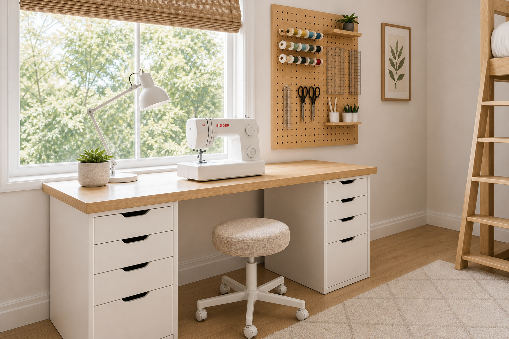

Loft + Sewing + Office Room — Design Brief
101" × 133" × 101.5"A compact room (8'5" × 11'1", 8'5½" ceiling) doing triple duty: a lofted sleeping platform with cube storage tucked beneath it, an office desk under the 60" window, and a sewing station along the right wall.




At 101.5" (8'5½"), a standing loft is viable — IKEA's open VITVAL loft (~64⅝") fits easily, and most twin open-frame lofts run ~65–69" tall, leaving a clear ~54" of headroom below for the cube storage and cart. Only IKEA's tall STORÅ (needs 106") still misses, by ~4½".
Top-down layout
Schematic, not to scale. The loft sits against the only solid wall (top) with cube storage + cart beneath it; the office desk goes under the 60" left window; the sewing station runs along the right wall between the closet and the 28" door; the 50" window and 29" entry stay clear on the bottom wall.
Loft bed: fit check @ 101.5" ceiling
| Option | Source | Height | Verdict |
|---|---|---|---|
| VITVAL twin loft frame (open base) | IKEA | ~64⅝" | Fits — feature pick |
| Twin open-frame loft | Wayfair | ~65–69" | Fits — clear underside |
| Twin wood loft (open base) | Target | ~65–70" | Fits |
| STORÅ full, solid pine | IKEA | 84¼" | Needs 106" — ~4½" short |
Sources: Wayfair, Target, IKEA product specs, checked 2026.
Furniture sourcing — IKEA · Wayfair · Target
The loft (sleeping platform, open underneath)
| Retailer | Product | Why | Approx. price |
|---|---|---|---|
| IKEA | VITVAL loft bed frame (twin) | Clean, light high loft with open space below — leaves the full footprint clear for cube storage + cart | ~$229 |
| Wayfair | Twin loft bed, open frame | Many birch/white open lofts ~65–69" tall — clear underside for shelving | ~$250–450 |
| Target | Twin wood loft bed (open base) | Budget open loft so the KALLAX cubes slide right underneath | ~$250–500 |
Office desk (under the 60" window)
| Retailer | Product | Why | Approx. price |
|---|---|---|---|
| IKEA | LAGKAPTEN / ADILS desk (47"×24") | Simple light-top desk that fits cleanly beneath the window for daylight | ~$70–90 |
| IKEA | MICKE desk (with cable management) | Compact desk with a drawer if you want built-in storage | ~$129 |
| Target | 47" writing desk (wood/white) | Matching light-wood alternative for the office zone | ~$120–180 |
| Wayfair | 48" writing desk | Plenty of birch-top options sized to sit under the window | ~$120–220 |
Sewing station (right wall)
| Retailer | Product | Why | Approx. price |
|---|---|---|---|
| IKEA | 2× ALEX drawer unit + LAGKAPTEN / LINNMON top | The classic sewing bench — a ~47" top fits the 71" solid run between the closet and 28" door; deep drawers for notions | ~$200–300 |
| IKEA | SKÅDIS pegboard + hooks/cups | Scissors, thread, rulers within reach above the bench | ~$30+ |
| Target | Brightroom 3-tier metal utility cart | Mobile catch-all for an in-progress project | ~$40 |
| Wayfair | Adjustable-height craft / sewing table (optional upgrade) | If you want a dedicated tilt/height table instead of the ALEX combo | ~$120–200 |
Storage, seating & finishing
| Retailer | Product | Why | Approx. price |
|---|---|---|---|
| IKEA | KALLAX 2×2 or 2×4 shelf + fabric bins | Slides under the loft for folded fabric, bins and books | ~$70–110 |
| Target | Brightroom cube organizer + fabric drawers | Alternative cube storage in white/wood for under the loft | ~$50–90 |
| Wayfair | Ergonomic office task chair (white/mesh) | Shared between the office desk and sewing bench | ~$90–160 |
| Target | Task lamp + low-pile cream area rug (~5×7) | Sewing light + softens the floor in the center rug zone | ~$60–120 |
Back/top wall (solid): loft bed up top with cube storage + a rolling cart underneath, ladder at the left end — the only wall without a window or door.
Left wall (60" window): office desk for daylight, task chair and lamp.
Right wall: sewing bench in the solid middle (between the 26" closet and the 28" door), pegboard above and ALEX drawers below.
• The room has 2 windows (60" left, 50" bottom) and 3 doors (26" closet + 28" on the right wall, 29" entry on the bottom) — the top wall is the only solid run.
• Keep the office desk at sill height under the 60" window so daylight isn't blocked; leave swing clearance for all three doors.
• Pick a loft that's open underneath (no built-in desk) so the KALLAX cubes + cart slide under it; confirm the ~42" × 80" twin footprint fits the 101" top wall and clears the top-right closet.
The renders are artistic visualizations — dimensions are approximated and furniture resembles, but is not an exact copy of, the listed pieces. Product links open the specific item where available, or the retailer's search results for series-based pieces (ALEX, KALLAX, Brightroom, etc.). Prices are rough 2026 estimates; verify on each retailer's site.